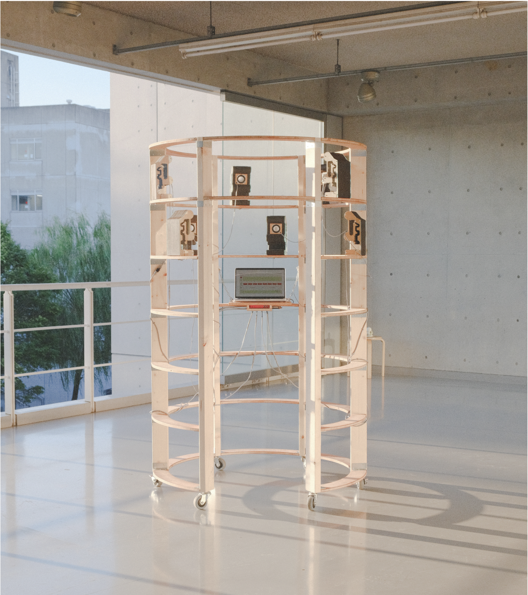
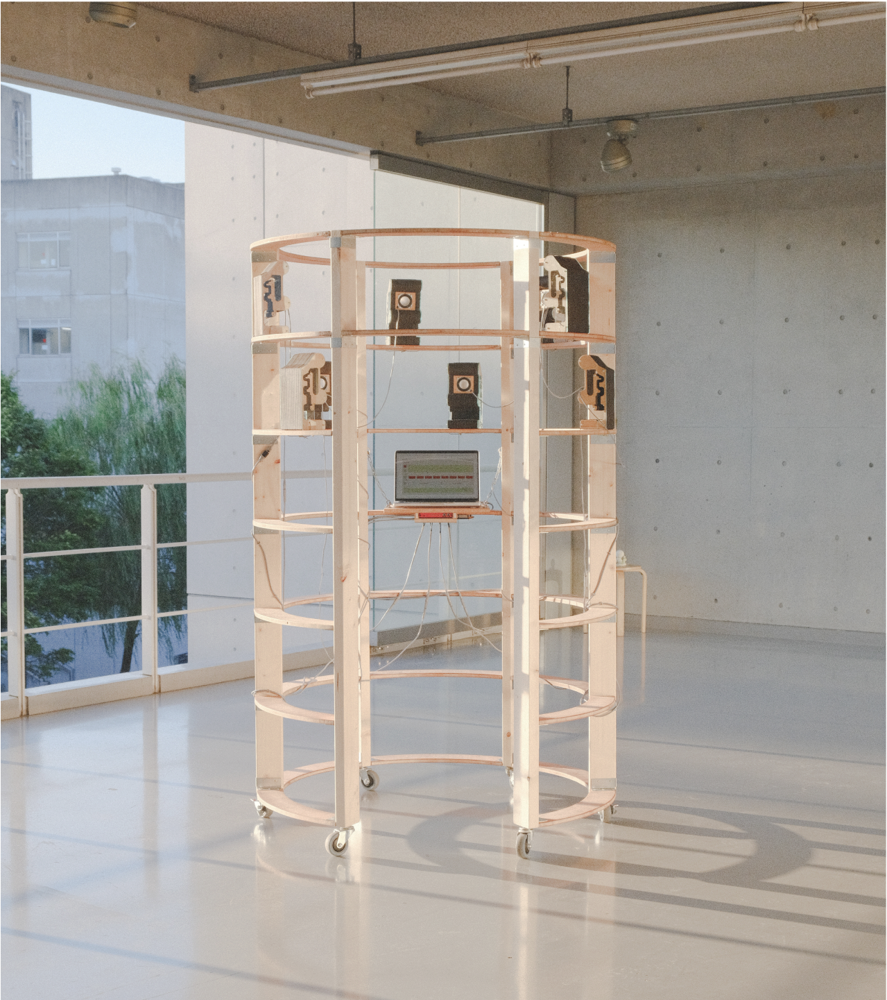
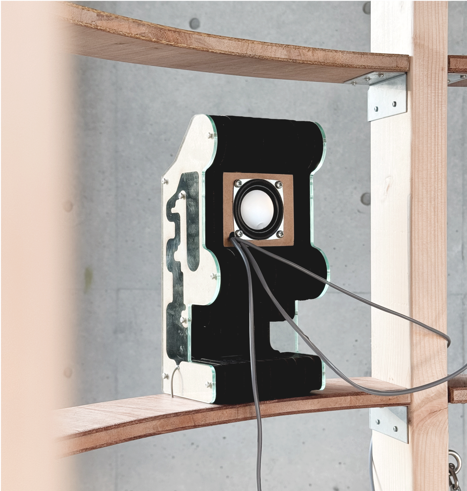
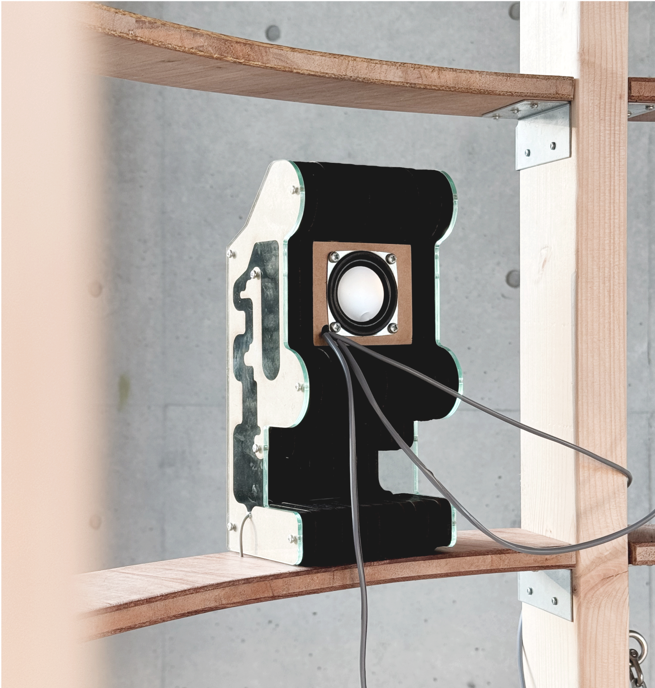

Spatial Instrument OO
2024
Sound Installation
Spatial Instrument OO is an experimental spatial sound system. It consists of a movable body, 8 speakers, and computer voice-recorder.
Players can enter the instrument body and make a speech. Recorded voice transforms into a choir running from 8 of handmade back-loaded horn speakers. Sound modulation system was created in Plugdata, which enables creating variety in playback audio and letting the player manipulate the modulation values.

 

 
